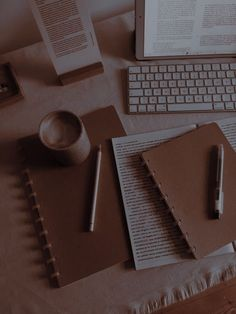
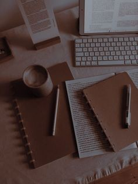

All Blogs
Mar, 22, 2023
My Passion for Collecting Journals
There’s something truly magical about journals—their blank pages hold endless possibilities, waiting to be filled with thoughts, dreams, and memories. Over the years, collecting journals has become one of my favorite hobbies, and each one in my collection tells its own unique story.
 

It all started with a simple leather-bound journal gifted to me years ago. Its smooth cover, faintly textured pages, and elegant design sparked a fascination that has only grown with time. Today, my collection features journals of all shapes, sizes, and styles, from vintage notebooks with intricate patterns to minimalist, modern designs.
What I love most about collecting journals is the way they reflect different moods and moments in my life. Some journals are filled with personal thoughts and sketches, while others remain blank, serving as inspiration for future projects. There’s a thrill in finding a new one—whether it’s at a quaint stationery shop, a bustling market during my travels, or even an unexpected find online.
Each journal has a story. One of my favorites is a handmade journal I found in Florence, its pages crafted from recycled paper with a cover adorned in Renaissance art. Another is a vibrant, fabric-covered journal from India, decorated with intricate embroidery that feels like holding a piece of culture in my hands.
For me, journals are more than just stationery—they’re keepsakes that capture the essence of creativity, reflection, and exploration. Flipping through their pages, even the blank ones, feels like connecting with a part of myself that is ever-evolving.
Collecting journals isn’t just a hobby; it’s a way of cherishing the beauty of expression. Whether they’re filled with words, drawings, or simply waiting for their moment, my journals are a constant reminder of the power of possibilities and the stories yet to be told.